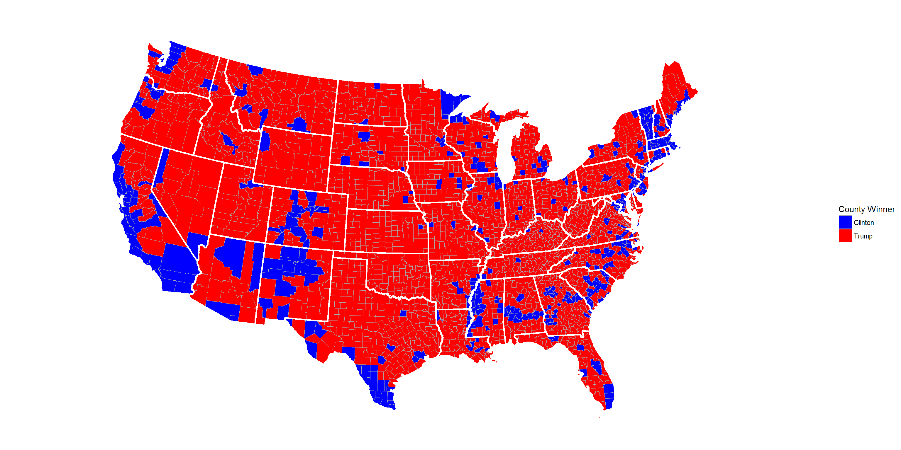

Motivation
The 2016 General Election for President of the United States was our very first general election in which we were able to vote. Many pundits, politicians, and citizens alike found the contest between Hillary Clinton and Donald Trump to be one of the most bitter presidential races in recent memory, and many more were surprised by the outcome.
Most pollsters and statisticians had Hillary Clinton maintaining a comfortable margin before the election. Yet, Donald Trump emerged victorious as the 45th President of the United States. Our goal is to try to explain why.
We have incorporated US Census demographic data, as well as employing comparisons between Donald Trump’s 2016 victory over Hillary Clinton with Barack Obama’s 2012 re-election victory against Mitt Romney.
Content
This website primarily displays the visualizations generated from our analysis coupled with machine learning models. They were created via leaflet and ggplot2 in R. Our 2012 election data was obtained from the Huffington Post, and our 2016 election data was sourced from Kaggle.
Code chunks for the graphics and models are not output. Please consult our Github (https://github.com/theNathanLin/election2016) for more information, including our original graphics and code.
Furthermore, our analysis excludes Alaska and Hawaii as well as third-party candidates.
Navigation
- 2016 Election
- Static and interactive win/loss maps for the 2016 general election covering Virginia, Pennsylvania, and the United States
- 2012 Election
- Static maps for the 2012 general election covering the United States
- 2012, 2016 Comparison
- Static maps for the 2012 and 2016 general elections covering the United States
- Comparison of flipped counties from 2012 to 2016
- Interactive comparisons of Obama and Clinton in the Northeast and Midwest
- Voter turnout analysis and comparison
- Hypothetical Scenarios
- Interactive comparisons of Obama and Trump in the Northeast and Midwest
- Static map of an Obama/Trump matchup covering the United States
- Machine Learning and Predictive Models
- Variable importance measures from US Census data
- Conditional Inference Trees (
ctree)
- Sequential Covering/Rule Based Methods (
jRip)
- Lazy learning, k-nearest-neighbor (
kNN)
- Static maps for 2016 county-by-county predictions covering the United States